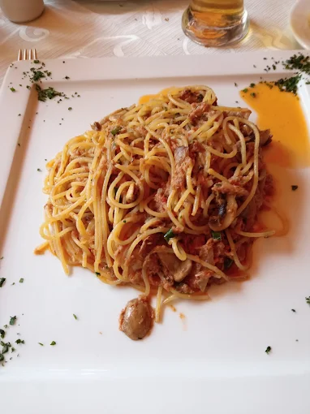
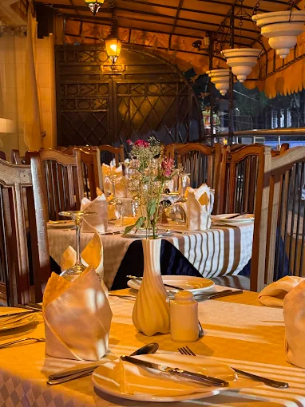
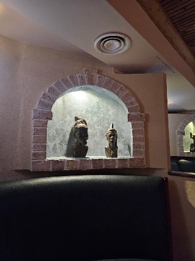

The Trattoria story
A Nairobi dining room built for memories.
Trattoria has the atmosphere of a place that has hosted generations of lunches, celebrations and quiet evenings. The warm wood, intimate booths and old-world details give the restaurant a character that deserves to be experienced before a guest even walks through the door.
This concept turns that atmosphere into a digital journey focused on reservations, signature dishes and the history behind the room.

